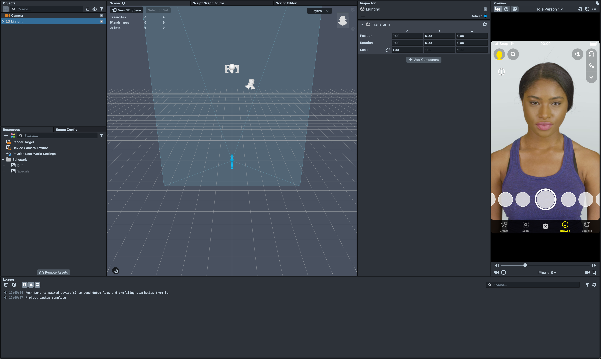
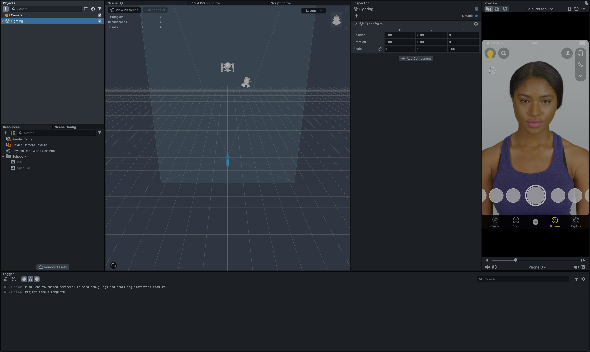
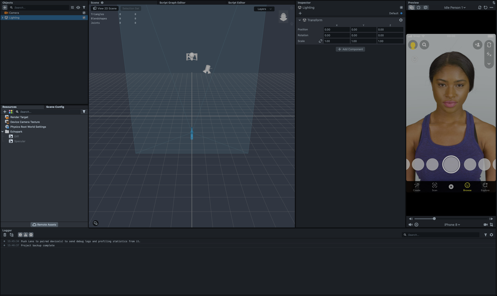
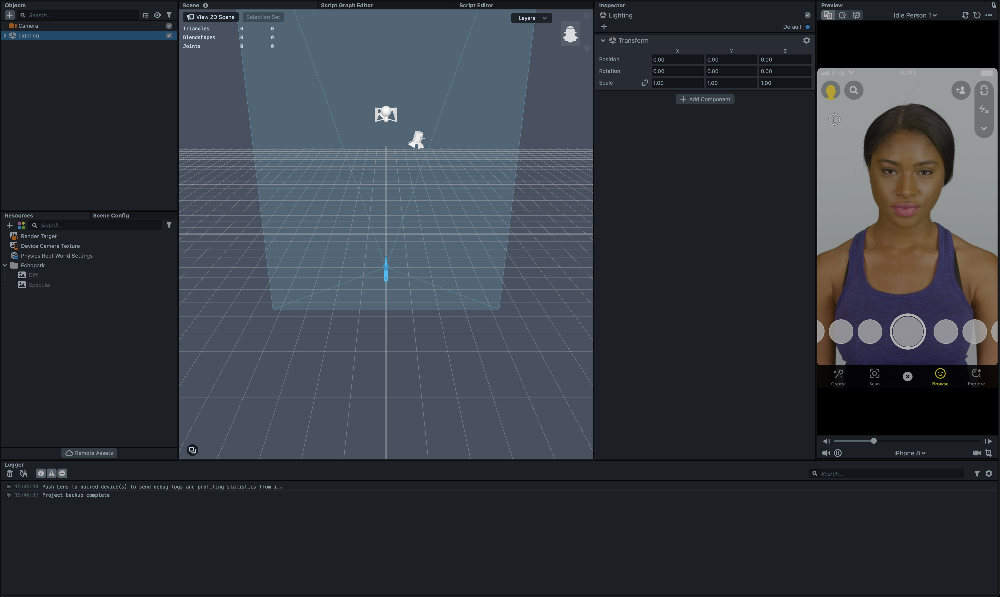
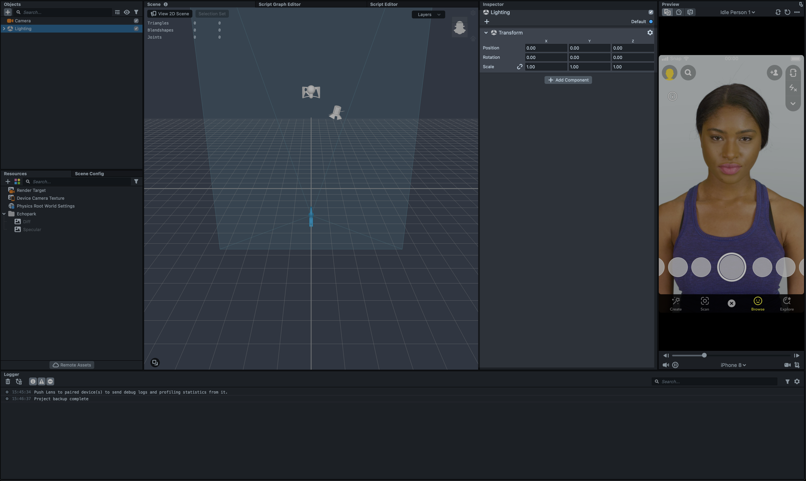
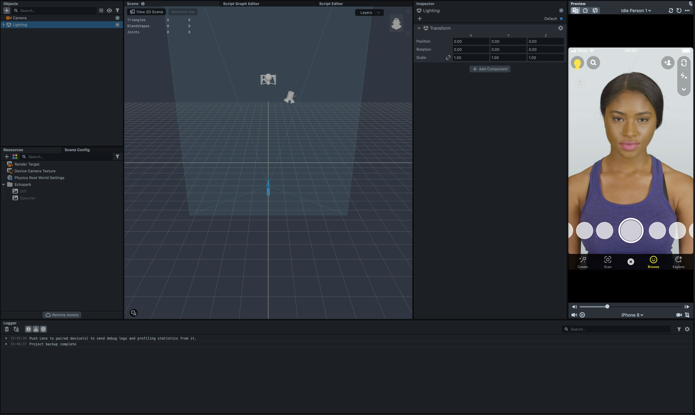

## Lens Studio Introduction --- ## What is Lens Studio? The most advaced AR-authoring tool (and it's free) --- ## What can I make? Augmented Reality projects (called Lenses) that run on Snapchat, Web, iOS, Android, and more! --- ## Navigating the interface Here's an overview of Lens Studio's interface  --- ## Navigating the interface Here is the scene tree, where you can see the hierarchy of objects in your scene  --- ## Navigating the interface Here is the resources panel, where you can see file resources that you can add to your scene  --- ## Navigating the interface Here is the scene navigator, where you can see a 3D representation of your AR scene  --- ## Navigating the interface Here is the inspector panel, where you can see properties of the currently selected object  --- ## Navigating the interface Finally, here is the preview panel, where you can see your lens in real-time  --- ## Time to try it yourself Open the [self-guided lab](https://github.com/enetosc/snap-rca-camkit-workshop/blob/main/guides/lens-studio.md) and follow the instructions to make your first lens